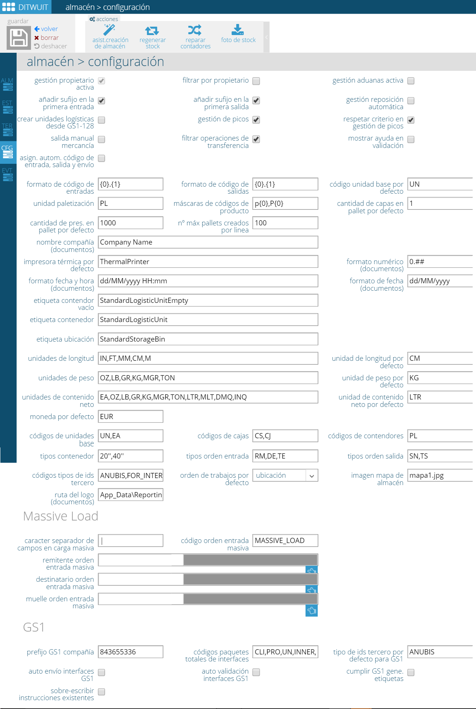

Configuración¶
{kind=link}
Desde esta opción es posible configurar todos los settings que definen cómo se gestionará la operación.
- Gestión de propietario.
- Filtrar por propietario.
- Gestión aduanas activa. Activar en caso de almacenes con gestión de aduanas -informes, interfaces,...-
- Añadir sufijo en la primera entrada.
- Añadir sufijo en la primera salida.
- Gestión de reposición automática. Si se identifica un picking con stock por debajo del mínimo se genera un trabajo de reposición automáticamente.
- Crear unidades logísticas desde GS1-128. Permite crear palets a partir de la lectura de un GS1-128.
- Gestión de picos. Permite indicar que los picos se preparen por el programa de pallet completo o no. Si está habilitado, al generar trabajo de una salida, se tendrá en cuenta los picos en stock para preparar desde la opción de pallet completo. Si en un mismo bloque (molada) se tienen racks completos y picos o por rotación el pallet más antiguo es un pico, DITWUIT permite leer el pico y actualiza la cantidad de la línea de la salida con la cantidad del pico preparado. La salida quedará en estado FINALIZADA CON INCIDENCIAS si la cantidad preparada es inferior a la pedida. El artículo no debe tener una ubicación de picking asignada (Localización de picking). Si el parámetro está deshabilitado se ignoran los picos a la hora de generar trabajo de pallet completo. Deberá moverse a picking para ser preparado o añadiendo bulto manualmente a la salida.
- Respetar criterio en gestión de picos. Relacionado con el parámetro anterior. Determina en el orden en que se sacarán los picos respecto a los pallets completos. Si está habilitado se dirige al operario a preparar un pico igual que un pallet completo cuando por rotación le corresponda. Si está deshabilitado se manda a preparar todos los pallets completos por FIFO y cuando no queden pallets completos que pida preparar los picos, saltándose el FIFO para los picos con respecto a los pallets completos. Dentro de los picos, lo hará por FIFO.
- Salida manual de mercancía. Permite sacar mercancía sin asociarla a una salida.
- Filtrar operaciones de transferencia.
- Mostrar ayuda en validación. Si está activo muestra el botón de ayuda en la validación de etiqueta vacía para poder seleccionar un artículo de la orden de entrada.
- Asignación automátia código de entrada, salida y envío. En caso de estar activo procede a asignar automáticamente un contador a entradas, salidas y envíos.
- Formato de código de entradas. Máscara para la numeración de las entradas.
- Formato de código de salidas. Máscara para la numeración de las salidas.
- Código unidad base por defecto. Clave a asignar a la unidad base de los productos.
- Unidad de paletización. Clave que identifica al palet.
- Máscaras de códigos de producto. Clave para asignar a productos nuevos.
- Cantidad de capas de palet por defecto.
- Cantidad de pres. en pallet por defecto.
- Número máximo de palets creados por línea.
A continuación se relacionan una serie de parámetros relacionados con impresoras y con cómo mostrar la información en los documentos:
- Nombre compañía. Nombre de la empresa que aparecerá en los informes.
- Impresora térmica por defecto.
- Formato numérico.
- Formato fecha y hora.
- Ruta del logo. Ubicación en el servidor del logo de los documentos.
También es posible definir los formatos de etiquetas por defecto para la etiqueta de contenedor vacío, etiqueta de contenedor y etiqueta de ubicación.
En este apartado también se definen las distintas unidades de medida que se utilizarán para las presentaciones de los productos de este almacén así como la moneda por defecto.
También es posible definir los posibles códigos de unidades base para las presentaciones, los códigos de las cajas y los códigos de los palets.
En caso de recibir mercancía en contenedores se pueden indicar los tipos de contenedores para registrarlo posteriormente en la entrada de mercancía.
Se pueden definir también clasificaciones a utilizar tanto para ordenes de entrada como de salida (tipos de órdenes).
Es posible establecer los distintos tipos de IDs de tercero que se van a definir en este almacén.
- Imagen mapa de almacén. Imagen del mapa para tener una visión global.
MASSIVE LOAD¶
Permite cargar información masiva de ordenes de entrada a través de interfaces planos en aquellos entornos donde no exista interfaz.
GS1¶
Estos parámetros definen si se utilizan los estándares de GS1 a nivel de interfaces y de etiquetas.